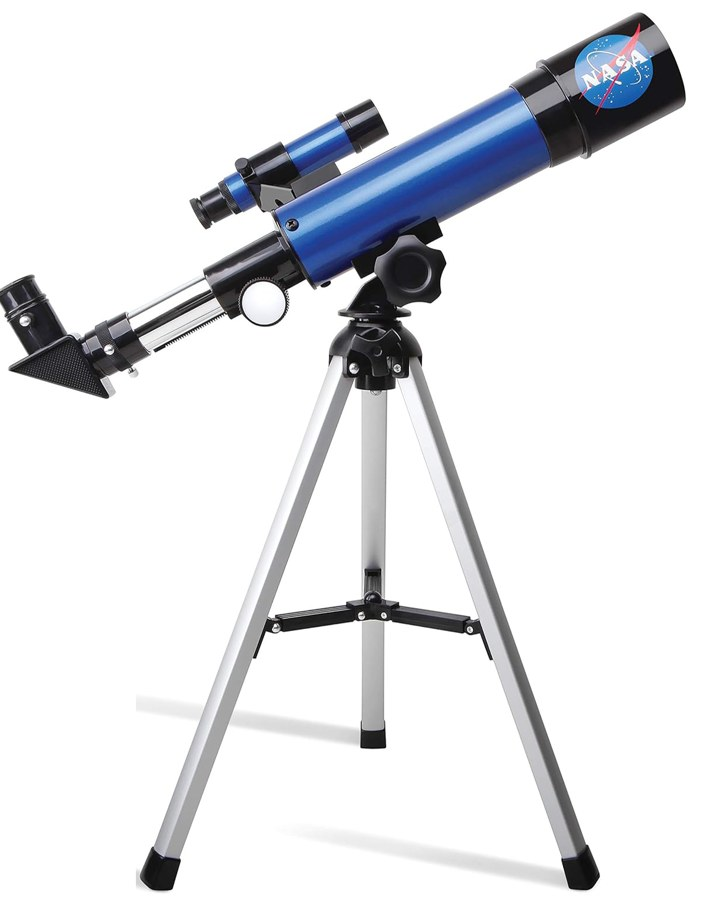

For the grandchild who's curious about everything.
A real telescope for ages 8+. Craters on the moon, from your own garden.
- Officially licensed NASA
- Delivered in 1-3 days
- 30-day easy returns

A real telescope for ages 8+. Craters on the moon, from your own garden.
